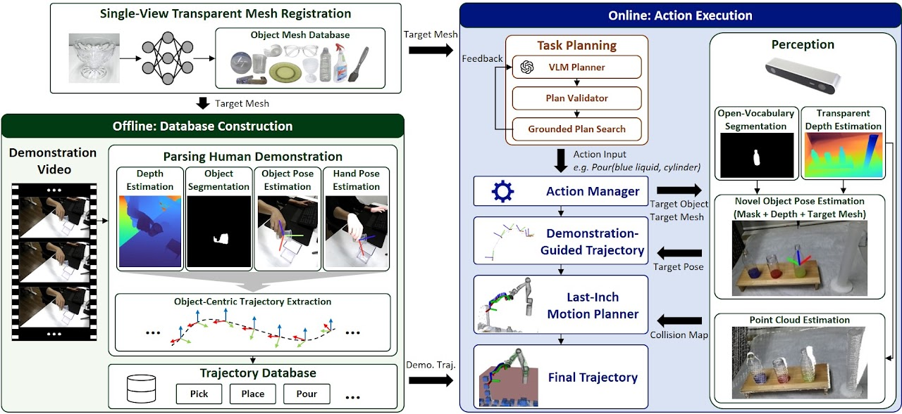

GLIMPSE: Transparent Object Manipulation
from Single Human Demonstration
GLIMPSE enables robots to manipulate transparent objects from task instructions using one human demonstration video of a single object per primitive skill
Abstract
Despite advances in transparent-object manipulation, transferring a single human demonstration per skill across transparent instances and composing the resulting skills under language instructions remains challenging. We propose GLIMPSE, a unified framework built on transparent object perception, demonstration transfer, and vision-language planning, which turns a single human demonstration per skill into precise, language-conditioned manipulation ranging from short-horizon grasping to long-horizon sequences. A key advantage of our framework is robust transparent object perception module, which recovers reliable metric depth, and 6D pose despite the refraction and missing depth that defeat conventional sensors. Our mask-and-depth pose ranking compares hypotheses against the observed mask and depth rather than unreliable RGB, providing accurate object-centric 6D poses, from which we retarget the single demonstrated trajectory to novel objects. We further present a task planner that refines VLM-generated plans under single-arm eye-in-hand constraints and composes long-horizon plans from 15 primitive actions built from six demonstration-derived manipulation skills together with parameterized and auxiliary primitives. Real-world trials on 6 tasks with 31 objects under varied lighting, occlusion, and tight-space scenarios, GLIMPSE outperforms existing methods.
Long-Horizon Task Demonstration
Method

Parsing Human Demonstration
Experiments
Diverse Environments
Challenging Lighting Conditions
Placement – Tight Shelf Retrieval
Rearrangement – Grocery Stocking
Pouring – Color Mixing
All experimental videos were played at 5× speed.